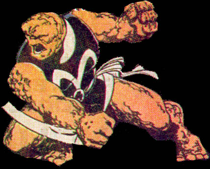

MS MARVEL
Name :Sharon Ventura
|
First
Appearance:The Thing 27, joined in #306
|
| Group
Affiliation :Fantastic Four, the Thunder riders, and
the Unlimited Wrestling Circuit
|
| Source
of Powers:The Power Broker's chemicals
|
| Base
of Operations :Unknown
|
|
Identity :Secret
|
| Nick
Names :She-Thing
|
|
Height:6'
|
|
Weight:400 to 500 lbs
|
Eyes:BlueHair:(in human form) Blonde, (as Thing) none
|
Occupation
:former adventurer, former wrestler, currently unknown
|
|
Marital
Status :single
|
|
Strength
Level:In human form, she could bench 10 tons. As a Thing,
she could bench 50 to 70 tons, in her latter transformation she
could bench 100 tons or possibly more.
|
|
Favorite
Story Line :Fantastic Four 347, when she realizes the
curse that her powers have brought her as she transforms back into
the she-thing.
|
|
Least
Favorite Story Line:Fantastic Four Unlimited 5 (or can I
just say all of the Unlimited books). Ms.Marvel is turned against
the team , Reed's gone, Claw is defeated by static, and Ms.
Marvel, who is now completely Hulk like (mentally and physically)
wanders off, never to be seen again.
|
|
Little
Known Fact :Ms. Marvel was seen more than once as the
brains of the Fantastic Four while Reed was gone. On more than one
occasion, her knowledge in certain fields actually exceeded Reed's
|
|
Powers :Sharon had super strength, speed, abilities, and endurance while she was human. Due to her prior transformation, it's been theorized that her Thing form was much stronger than Ben's earlier transformation. As the She-Thing, she had even a greater endurance. The last transformation gave her even greater strength but caused her mind to deterate quickly. |